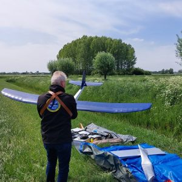
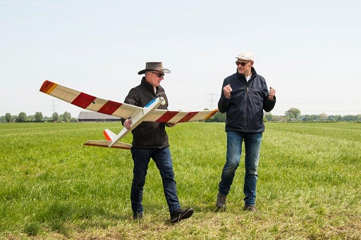
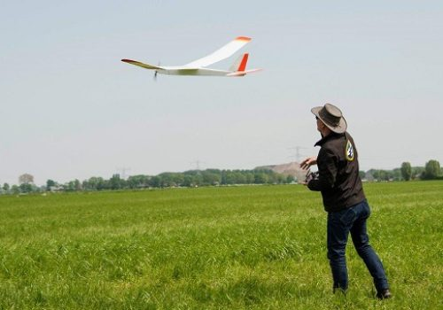

( Spirit 100 Maiden geschreven door Paul )
Eindelijk is het dan zover. Na maanden bouwen en ondertussen starten met de bouw van nog twee vliegtuigen, gaat het dan toch gebeuren. Heb al veel vlieginstructies gehad met de Spirit 100 van een clubgenoot en een Spirit 100 van de club maar nog niet gevlogen met mijn eigen gebouwde Spirit 100. Ik vond het reuze spannend, zo spannend dat mijn vrouw het zelfs merkte.
Prille leden van de Arnhemse Luchtvaart Club die nog geen of weinig bouwervaring hebben beginnen vaak met de bouw van een Spirit 100. Een vliegtuig dat zich redelijk gemakkelijk laat vliegen en het heeft een simpele bouw. Combinatie van balsahout, vuren en triplex, met hoogteroer, richtingsroer en een elektromotor. De elektro motor is bedoeld om de kist op hoogte te brengen om vervolgens uit te schakelen en verder te zweven op zoek naar een thermiekbel.

De ALC leden maken het de nieuwkomers wat gemakkelijker door ondersteuning te bieden bij de bouw van de Spirit in de vorm van advies, freesdelen, tekeningen, houtvoorraad en niet te vergeten koffie en koeken/cake/gebak. Zodoende heb ik onder begeleiding mijn eigen Spirit 100 gebouwd en vandaag was de ‘maiden’. Afgesproken met clubgenoot en geregistreerde instructeur op weg naar het ALC vliegterrein bij de boer. Gepakt en gezakt met alle vliegspullen, zonnebril, pet, KNVvL uitreksel en RDW nummer op vliegtuig.
Donderdag 18-5-2023 13:00u. Na controle van twee zenders, leerling / meester in combinatie met de ontvanger in de kist, kunnen de vliegtesten beginnen. Een handstart door mij met Ruud aan het stuur zonder motorvermogen. Ruud trimt in hoogte iets bij en ik stel dat gelijk in op mijn leerling zender. Ziet er goed uit. Nog een handstart maar dan met motor aan. Ruud brengt de Spirit op hoogte, trimt nog een beetje ‘down’ op het hoogte roer en vliegt wat figuurtjes. Ziet er geweldig uit! Mijn eigen gebouwd vliegtuig gaat als een speer! Ruud dirigeert de Spirit door de lucht om te kijken wat de vliegeigenschappen zijn van dit exemplaar. Landing gaat ook goed.

Na een check up van zenders en vliegtuig gaat ie weer omhoog met motor aan, gecontroleerd door de Meester. Eenmaal op hoogte krijg ik het zeggen over de roeren van mijn Spirit 100. Tis wat als je voor het eerst vliegt met een eigengebouwde kist. Wat rondjes gevlogen, met wind mee, wind in, weer terug op hoogte brengen met motor. M’n kistje doet precies wat ik wil. Nu ben ik nog enthousiaster!
Dan gaan we de landing inzetten. Ruud neemt het weer over en de kist wordt vakkundig in het standaard patroon naar de landingsbaan gemanoeuvreerd. Daar gaat het mis. De stuurman geeft nog aan ‘het lijkt wel of er instellingen zijn veranderd’ maar we denken beide ‘maar dat kan eigenlijk niet’.
Het blijkt dat de MC20 zender, die ik als leerling heb geprogrammeerd, problemen heeft met zijn bereik. De MX16, die geprogrammeerd is als meester, doet het dan ook niet goed. Met wat kunst en vliegwerk komt de Spirit toch nog enigszins goed aan de grond. Na inspectie blijken 2 teflon schroeven door de vleugels getrokken te zijn, een breukje in de horizontale stabilisator en een breuk in de verticale stabilisator. Dat wordt waarschijnlijk wat folie wegsnijden en met dunne secondelijm de boel weer aan elkaar plakken.
We hebben net als op het TV programma ‘Aircrash Investigation’ direct een onderzoek ingesteld op het vliegveld. Servo’s zijn goed, link met roeren zijn goed, accu is goed, bedrading onbeschadigd. Rangetest met MX16 gaat goed maar het gaat mis met de MC20. De MC20 is mijn laatst, op Marktplaats, gescoorde Graupner zender. Onverwoestbaar spul, tot vandaag. Mijn MC20 is de oorzaak van de te harde landing.
Niet getreurd, de kist van Ruud opgepakt en hebben we samen nog even mee gevlogen.
Tijdens dit hele spektakel hebben we nog bezoek gehad van de Paparazzi, Jan kwam langs en heeft nog wat leuke plaatjes geschoten om ons verhaal wat kracht bij te zetten.
Moraal van het verhaal. Doe geregeld een ‘range check’ met de zender(s) die je gaat gebruiken. Het is een functie die zo ongeveer op elke zender ergens verstopt in de menu structuur. Het zendvermogen van de zender wordt dan tijdelijk op een laag pitje gezet en daarbij kan je van de ontvanger weglopen terwijl je de sticks regelmatig beweegt. Een hapering in de aangestuurde functies vallen direct op.

Het vliegweer was redelijk, het waaide iets harder (3 Bft) dan voorspeld (2 Bft) maar dat mocht de pret niet drukken. Ok, alles ingepakt en naar huis. Thuis LIPO’s weer teruggebracht tot ca 50%. Nu gaan onderzoeken wat ik aan die MC20 zender kan gaan doen. Het blijkt dat er sinds 1 juni 2023 een service dienst is voor Graupner, zie service-graupner.de. Wellicht dat ik ze contact om te kijken of zij iets voor mij kunnen doen.
Ruud, wederom heel erg bedankt voor de instructie en het bijstaan met m’n maiden. Al met al, een fijne geslaagde vlieg dag, op naar meer.

Spirit 100 facts :
- Spanwijdte 100 inch ca. 2.5 m
- Balsa, vuren, multiplex
- Folie bedekking
- gewicht 1520 gram
- Zwaarte punt 92.5 mm
- Propeller 11×6.5 Aeronaut
- 2200mAh Lipo
- Sky Walker V2 Motor regelaar
- Graupner GR-16 HOTT Ontvanger
- 2 Futaba servo’s